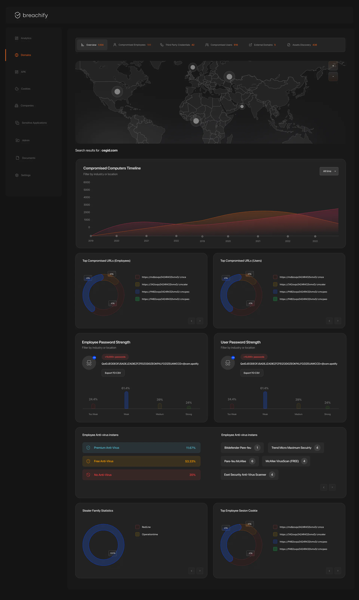

Threat intelligence
Breachify
Infostealer malware copies what a browser remembers: saved logins, session cookies and details about the computer around them. The resulting bundle is called a stealer log. Breachify is a desktop intelligence platform designed to help an organisation find its share of that exposure, understand the evidence and decide what needs attention. Its investigation tools sit alongside company monitoring and the administration needed to run the platform as a service. The organising idea is progressive detail: start with the whole picture, then open only the evidence needed to answer the next question.
The shared shell does a quiet but necessary job: it keeps place and action distinct from evidence. Near-black surfaces recede; charcoal cards group related facts. The sidebar stays available while the main panel changes, and orange marks the active destination as well as the next primary action. Blue is reserved for secondary controls and charts. Red, yellow and green describe risk or state. That restraint matters in a workspace where a crowded table may be more useful than an illustration.
The analytics dashboard
Before a domain is chosen, the global dashboard offers a view across the collection. Country and industry filters sit above the compromised-computers timeline, and the same pattern returns above password strength. Reusing that arrangement reduces the amount an analyst has to relearn when moving between questions. The organisation strip below the timeline offers a potential route into a narrower investigation; its names and logos are blurred here because they were placeholders. Stealer-family statistics add another dimension: the malware associated with the collected records, rather than simply the number of accounts.
The repeated filters make comparison possible in the proposed workflow, but the values in this frame are illustrative. The strength bars do not form a coherent distribution totalling 100%, and some malware legend entries repeat. Those are unfinished sample values, not claims about exposure in the world. The design question is whether a reader can distinguish time, credential quality and malware family without treating them as interchangeable measures of risk.
One search box
The domain search screen concentrates on one decision: what to investigate. The input and orange button sit above a large quiet area, rather than competing with an empty results table. “Compromised Domain Users” supplies a scale cue; the screen’s 1,898,596 is a sample count. Search-history chips mix domains with Android package names. That suggests a common entry pattern for identifiers an organisation owns, although the design still needs to make the accepted input types explicit. The same search vocabulary returns in cookies and sensitive applications.
The overview, top to bottom
The overview is deliberately long. Geography comes first, followed by change over time, exposed URLs, password strength, endpoint protection, malware and sessions. That sequence gives a reader several ways to choose the next step without opening a record prematurely. The employee and user distinction runs through the page: separate URL charts, separate password-strength cards, and different implications for who needs to respond. Scroll through the dashboard to follow its hierarchy; the original screen remains intact rather than being reconstructed from selected numbers.

- 01 · OrientSix views, one domainCounts establish the available paths. These overlapping categories are not a total.
- 02 · LocateWhere the evidence sitsA map places the investigation geographically. Markers need a defined measure before production.
- 03 · FollowThe change over timeThe timeline keeps the searched domain visible. Time adds context to a count.
- 04 · SeparateEmployees and usersThe two URL summaries distinguish workforce exposure from customer accounts.
- 05 · CompareCredentials and devicesPassword-strength cards lead into antivirus coverage and the products observed.
- 06 · InspectMalware and sessionsStealer families and session cookies point toward the evidence inside a device record.
Six tabs, one spine
Overview, Compromised Employees, Third Party Credentials, Compromised Users, External Domains and Assets Discovery divide the investigation into six views. Their sample counts overlap and must not be summed. List views keep a familiar toolbar: refresh, period, sorting, export and a keyword, username or computer-name filter. This is the spine of the workflow: the question changes, but the tools for narrowing and taking away evidence stay in the same place. The second frame below contains an Overview highlight despite showing the credentials view, a frame-state inconsistency that needs correcting in the product design.
Employees and users
An employee record and a customer account can involve the same organisation while requiring very different responses. The first may call for an endpoint investigation and a review of corporate access. The second may belong to a customer-support or account-security team. Breachify keeps those populations separate, then gives each record two clocks: Date Compromised and Last Time Added. One describes the underlying event; the other describes when the platform recorded the evidence. Their gap is a delay in this collection’s visibility, not proof that nobody elsewhere had already detected or handled the incident.
This live demo needs JavaScript.
The device record
A device row brings the evidence back to a particular machine: stealer identifier, malware family, IP address, path and dates. Expanding the row opens the next level in place. Evidence pills separate profile facts, corporate credentials and domains with sensitive cookies. A domain then opens into individual cookie records. The reader can go deeper without abandoning the surrounding list. This frame mixes a “Corporate Credentials found” heading with cookie columns; the hierarchy is clear, but that heading still needs to match the selected evidence category.
This live demo needs JavaScript.
Every level answers one question, and the level above it is always one click away.
Resolved is a state
Reviewing a record is different from handling its exposure. The design proposes a switch on each device , an Unresolved or Resolved filter, and a Resolve All action in the toolbar . Together they create a working queue rather than an endless archive. A resolution marker records the team’s judgement; flipping it does not disinfect a computer or revoke a session. The miniature makes that distinction visible through an undoable state change. Cookie and credential exports remain separate actions because the downstream work and the evidence format differ.
The intelligence layer
From exposure to an explainable risk assessment
Finding exposure is the beginning. An intelligence product also needs to explain which record deserves attention first, what evidence supports that judgement, and what could change it. For Breachify, the proposed AI architecture separates three jobs: deterministic processing establishes the facts, a risk model orders review, and an AI analyst translates the evidence into a cited assessment. Keeping those responsibilities explicit makes the system inspectable. A fluent explanation should never be allowed to manufacture a device, a successful sign-in or a confidence value that the underlying data does not support.
The source design includes an “Analyze with AI” action. The architecture, formula and analyst output below develop that idea into a concrete technical design. They are not claims about a trained or deployed Breachify model.
The sandbox uses four inputs: credential exposure, session evidence, account impact and evidence age. A weighted sum provides an interpretable baseline. Recency uses exponential decay, F = 2−age/30, so a 30-day-old observation has half the recency contribution of a new one. A floor preserves priority for older evidence: time passing does not resolve an exposed account. Credential and session weights describe available evidence, while account impact describes the consequence in its business context. The coefficients are illustrative design choices. They would need outcome data, review and calibration before becoming an operational policy.
This live demo needs JavaScript.
Missing evidence is handled as an interval. If session evidence is unknown, the calculation evaluates that term from zero to one instead of silently replacing it with zero. The resulting priority range makes the uncertainty visible; the analyst brief abstains from a precise rank. “Four inputs known” is evidence coverage, not model confidence. Nor is 81 out of 100 an 81% probability of a breach. The useful question is whether the ordering helps a team find consequential exposure within its review budget, and whether the explanation faithfully reflects the signals that produced it.
A trained ranking model could later replace this baseline while preserving the same interface contract. A gradient-boosted tree model is a candidate for structured signals such as privileged access, exposed credential categories, repeated independent sightings and timing. Its feature contributions would explain how the model arrived at an ordering, without being presented as causal proof. Training would require clearly defined outcomes and time-separated evaluation. Anomaly detection could add a separate novelty signal against an organisation’s own baseline, but a rare record should remain a lead to inspect, not an automatically confirmed incident.
The intelligence layer
An AI analyst that shows its evidence
The proposed analyst starts from a bounded evidence package: the selected device record, its associated artefacts, authorised asset context and relevant detection metadata. Retrieval respects the organisation and account permissions before any material reaches the model. Passwords and cookie values are redacted; the model receives the existence, category, timing and source of an artefact when that is enough to answer the question. Source text is treated as evidence to analyse, not as instructions to execute. This keeps the model’s role narrow: explain the supplied record and identify what the analyst should verify next.
The output has four parts: observations with record citations, a risk interpretation tied to the scoring inputs, possible attack paths labelled as hypotheses, and verification or response steps for a person to review. A device, a browser artefact and a corporate application can form a candidate path through an entity graph. They do not prove that every edge was traversed. Session revocation changes one branch; credential exposure may leave another branch unresolved. The live assessment makes that distinction visible so the reader can see the difference between a recorded fact, an inference and an action still requiring approval.
A production response would be constrained to a structured schema and checked before display. Every claimed observation must resolve to an authorised source record. Unsupported citations, missing inputs or contradictory dates should produce a narrowed answer or an explicit request for evidence. Analysts can inspect the original record, correct the interpretation and record their decision. That feedback can become labelled evaluation material after review; it should not silently retrain a model from every click. The goal is an assistant whose reasoning can be challenged at the same level of detail as the evidence itself.
Assets discovery
Where the overview summarises exposure, Assets Discovery lists the resources behind it. Employee and compromised-user pills preserve the same population split as the charts. A total-URLs banner offers a bulk export, while each domain group offers its own export and View All action . Occurrence counts help distinguish repeated resources from isolated ones without turning frequency into a severity score. Pagination keeps the inventory bounded. Android-style resource identifiers appear alongside the domain grouping, carrying the investigation beyond the website alone.
What the analyst gets
The useful outcome is a chain of questions that stays connected: which organisation, which population, which device, which evidence, which session? Breachify’s design keeps the level above available while the next one opens. The design file also includes initial detection, installed software, antivirus information and an “Analyze with AI (NEW)” control. Its proposed role is to help interpret a device and draft a likely attack path, but the original file has no AI result screen. The proposed architecture and interactive assessment above extend that direction in this case study. The next chapter follows the evidence beyond logins: sessions, application identifiers and the raw records underneath.